plot_dimplot() wraps Seurat’s DimPlot()
with consistent styling and a flexible meta_col argument,
making it easy to overlay any categorical metadata column onto a UMAP
(or other dimensionality reduction). This vignette shows three common
use cases:
- GEX metadata: Seurat clusters and cell-type annotations
- BCR metadata: BCR features transferred from paired AIRR data
-
ADT expression: cell surface protein levels via
FeaturePlot()
Setup
Initial GEX object
# could change these
num_genes <- 400
num_cells <- 200
num_proteins <- 6
data_desc <- "Simulated"
named_clrs <- list() # so that there aren't a bunch of color variables
# TODO: use my simple simulator functions
gex_counts <- Matrix(as.integer(rexp(num_genes * num_cells, rate = 0.5)),
nrow = num_genes, ncol = num_cells, sparse = TRUE)
adt_counts <- Matrix(as.integer(rexp(num_proteins * num_cells, rate = 0.3)),
nrow = num_proteins, ncol = num_cells, sparse = TRUE)
rownames(gex_counts) <- paste0("Gene-", seq_len(num_genes))
colnames(gex_counts) <- paste0("Cell-", seq_len(num_cells))
rownames(adt_counts) <- c("CD19", "CD21", "CD27", "CD38", "IGD", "IGM")
colnames(adt_counts) <- colnames(gex_counts)
obj <- CreateSeuratObject(counts = gex_counts, project = "Example")
obj[["ADT"]] <- CreateAssay5Object(counts = adt_counts)
# TODO: show real QC
obj <- seurat_pipeline(obj, nfeatures_RNA = 0, perc_mt = 100,
num_features = 400, num_pcs = 15, num_dims = 10,
k_param = 15, cluster_res = 0.5, verbose = FALSE)
# add some B cell types
# TODO: include non-B cell types as well
obj$annotated_clusters <- sample(c("Memory B cells", "Naive B cells",
"Plasma cells", "Transitional B cells"),
num_cells, replace = TRUE)Adding BCR metadata
After running gex_add_airr() and
process_bcr_features() on real data, BCR-derived columns
are available in obj@meta.data. Here we simulate them for
illustration:
# TODO: correlate these values with cell types instead of having them be random
# TODO: change these to actual numbers
obj$cdr3_aa_length <-
sample(c("Short", "Medium", "Long"), num_cells, replace = TRUE)
obj$isotype <-
sample(c("IgM", "IgD", "IgG", "IgA", "IgE"), num_cells, replace = TRUE,
prob = c(0.35, 0.15, 0.30, 0.15, 0.05))
obj$locus_light <-
sample(c("IGK", "IGL"), num_cells, replace = TRUE)
obj$mu_freq_bins <-
sample(c("0%", "0% to 1%", "1% to 5%", "5% to 10%", "10% to 25%"),
num_cells, replace = TRUE)
obj$v_call_family <-
sample(paste0("IGHV", 1:7), num_cells, replace = TRUE)1. GEX Metadata
Seurat clusters
The simplest call colors cells by seurat_clusters (the
default meta_col). Passing the assay name to
assay populates the plot title.
# could also just use umap
plot_dimplot(seurat_obj = obj, data_source = data_desc,
title = "GEX", reduc = "rna.umap")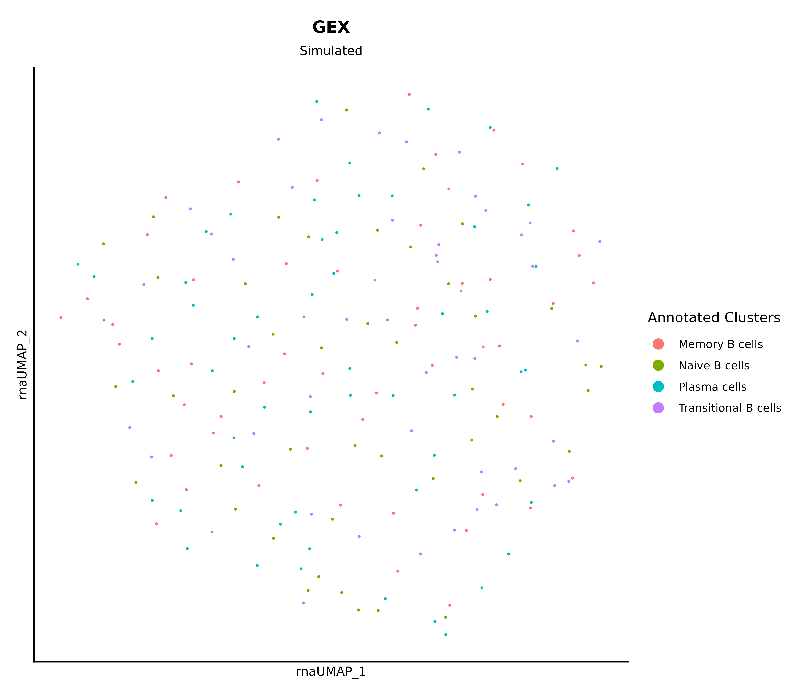
To suppress labels and the legend:
plot_dimplot(seurat_obj = obj, data_source = data_desc,
title = "GEX", reduc = "rna.umap",
plot_label = FALSE, include_legend = FALSE)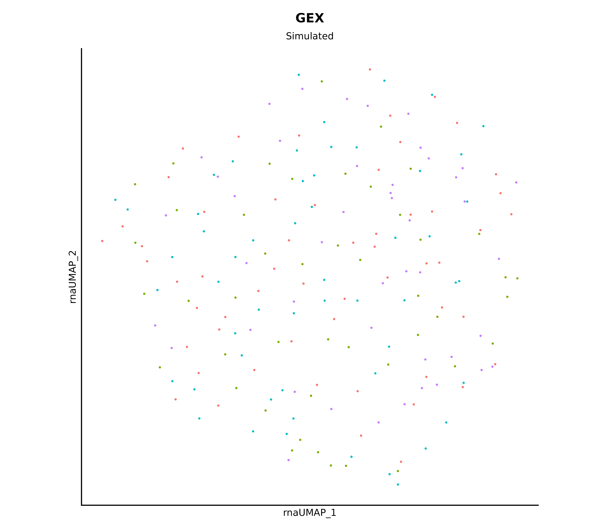
Cell type annotations
Sort the cell type levels alphabetically.
plot_dimplot(seurat_obj = obj, data_source = data_desc,
clrs_specific = named_colors$cell_types_celltypist,
title = "GEX", reduc = "rna.umap",
meta_col = "annotated_clusters", plot_label = FALSE)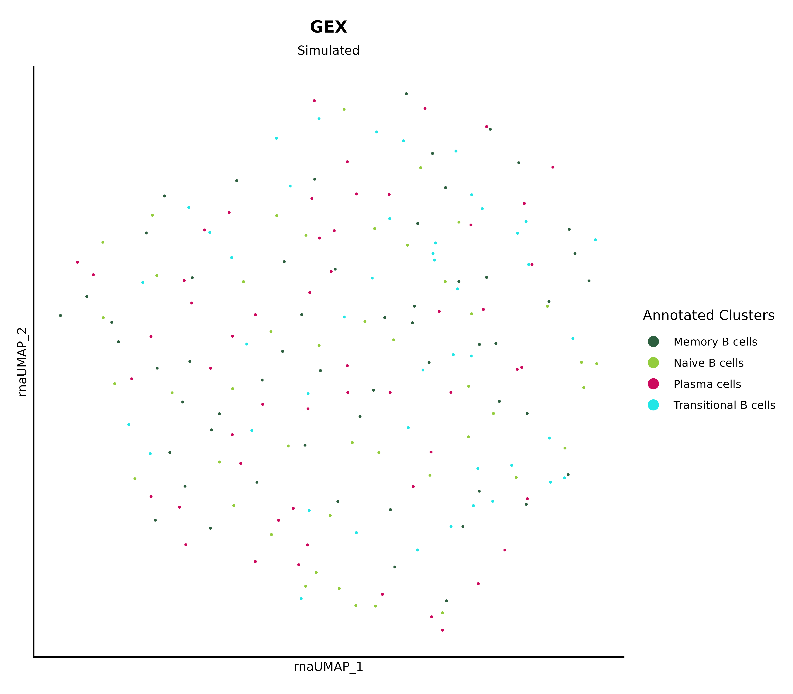
Highlighting specific populations
Pass a character vector to highlight to draw a subset of
cells on top of a grey background.
plot_dimplot(seurat_obj = obj, data_source = data_desc,
title = "GEX", reduc = "rna.umap",
meta_col = "annotated_clusters",
highlight = c("Naive B cells", "Plasma cells"))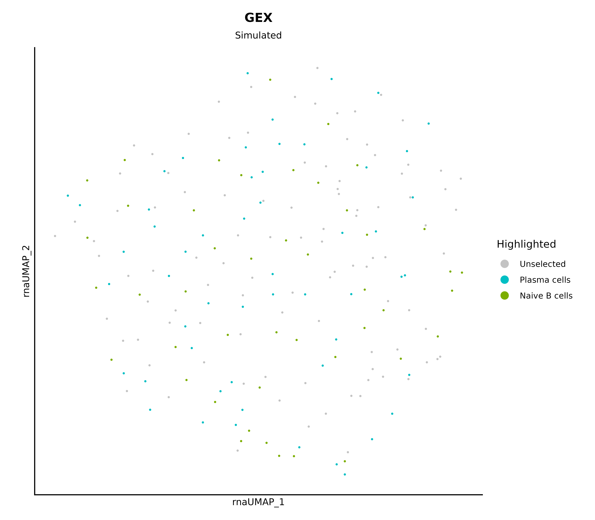
2. BCR Metadata
BCR-derived columns from process_bcr_features() and
gex_add_airr() are transferred into the GEX Seurat object,
so they are plotted exactly like any other metadata column.
CDR3 length
named_clrs$cdr3 <- c(Short = "#482778", Medium = "#20938C", Long = "#C9E020")
plot_dimplot(seurat_obj = obj, data_source = data_desc,
clrs_specific = named_clrs$cdr3,
# clrs_specific = named_colors$cdr3,
title = "CDR3 Length", reduc = "rna.umap",
meta_col = "cdr3_aa_length",
plot_label = FALSE, legend_label = "CDR3 Length")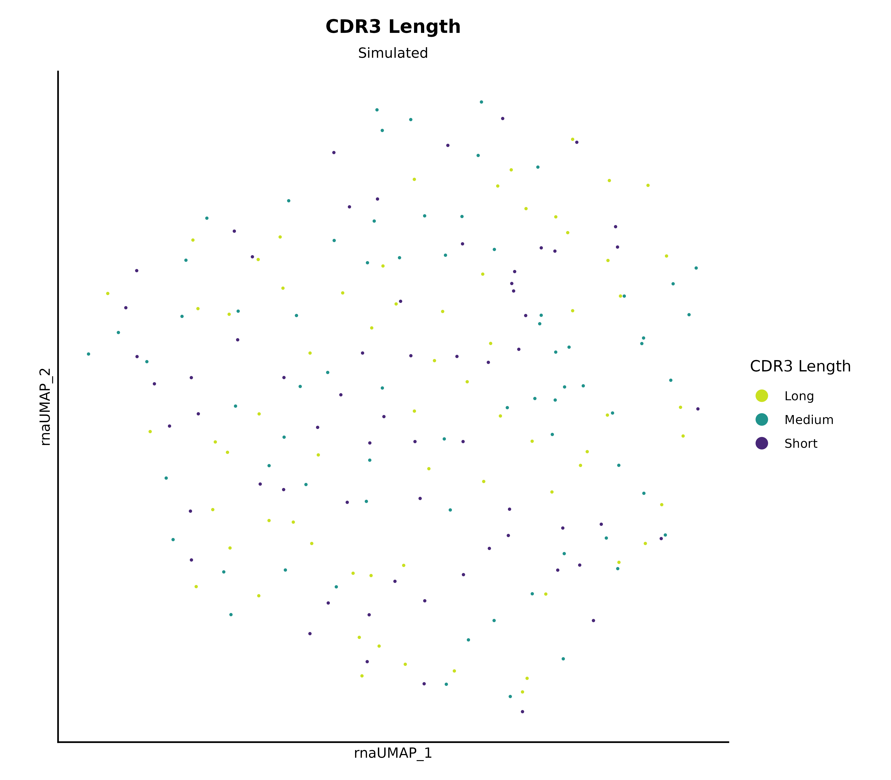
Isotype
# uses colors defined in the alakazam package
plot_dimplot(seurat_obj = obj, data_source = data_desc,
clrs_specific = named_colors$isotype,
title = "Isotype", reduc = "rna.umap",
meta_col = "isotype",
plot_label = FALSE, legend_label = "Isotype")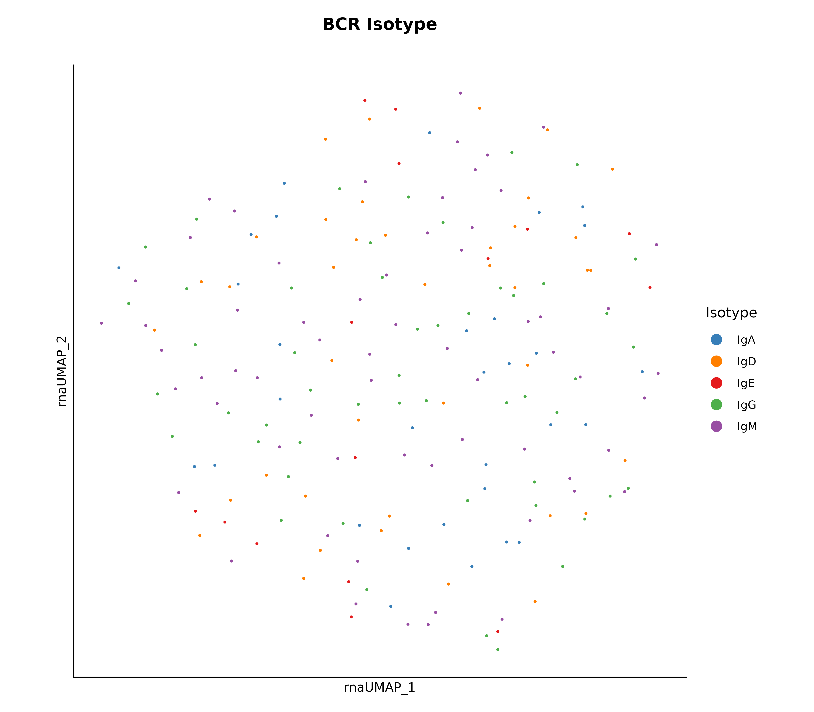
SHM frequency
You could also use a FeaturePlot to see the actual
values.
# note that the last bin's name is dependent on your dataset
# be careful with the order
plot_dimplot(seurat_obj = obj, data_source = data_desc,
clrs_specific = named_colors$mu_freq_bins,
title = "SHM Frequency", reduc = "rna.umap",
meta_col = "mu_freq_bins", plot_label = FALSE,
legend_label = "SHM Bins", sort_idents = FALSE,
order = TRUE)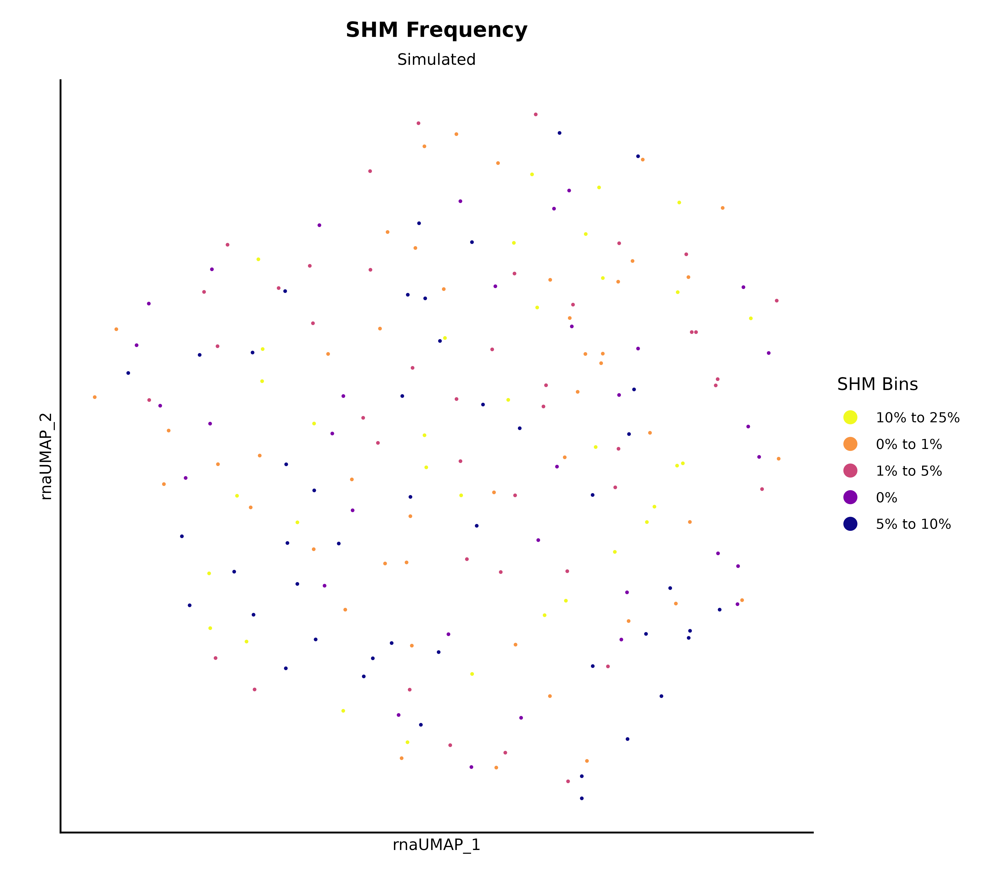
V gene family
plot_dimplot(seurat_obj = obj, data_source = data_desc,
title = "V Gene Family",
clrs_specific = named_colors$v_call_family,
meta_col = "v_call_family", plot_label = FALSE,
legend_label = "V Gene Family", reduc = "rna.umap")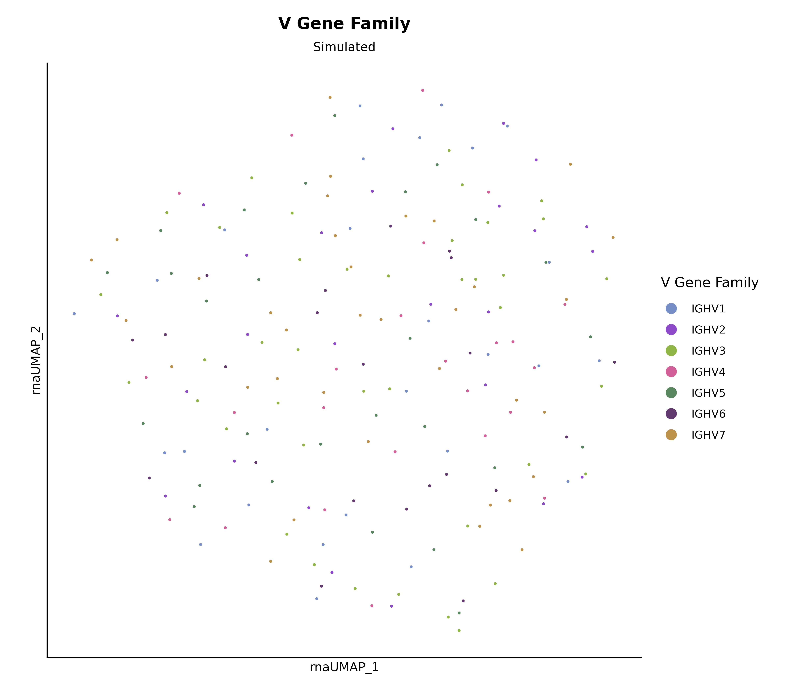
Combining plots with patchwork
p_iso <- plot_dimplot(obj, data_source = data_desc,
title = "Isotype", reduc = "rna.umap",
clrs_specific = named_colors$isotype,
meta_col = "isotype",
plot_label = FALSE, legend_label = "Isotype")
p_shm <- plot_dimplot(obj, data_source = data_desc,
title = "SHM", reduc = "rna.umap",
clrs_specific = named_colors$mu_freq_bins,
meta_col = "mu_freq_bins",
plot_label = FALSE, legend_label = "SHM Bins",
order = TRUE)
p_cdr3 <- plot_dimplot(obj, data_source = data_desc,
title = "CDR3 Length", reduc = "rna.umap",
clrs_specific = named_clrs$cdr3,
meta_col = "cdr3_aa_length",
plot_label = FALSE, legend_label = "CDR3 Length")
(p_iso + p_shm + p_cdr3) + plot_layout(nrow = 1)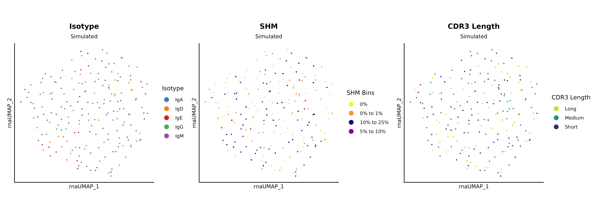
3. ADT Expression
ADT features are stored as adt_<marker> in the
Seurat object after normalization. Because expression is continuous,
these are best visualized with Seurat’s FeaturePlot() and a
sequential color scale rather than plot_dimplot().
seurat_pipeline() automatically normalizes the ADT assay
with CLR, so no extra step is needed.
ADT features are referenced as "adt_<marker>" (the
assay key is prepended to the feature name).
Single marker
# use CD19 as an example
FeaturePlot(obj, features = "adt_CD19",
reduction = "rna.umap", order = TRUE, raster = FALSE) +
scale_color_viridis_c(option = "G", direction = -1) + # name = "CD19"
clean_dimplot2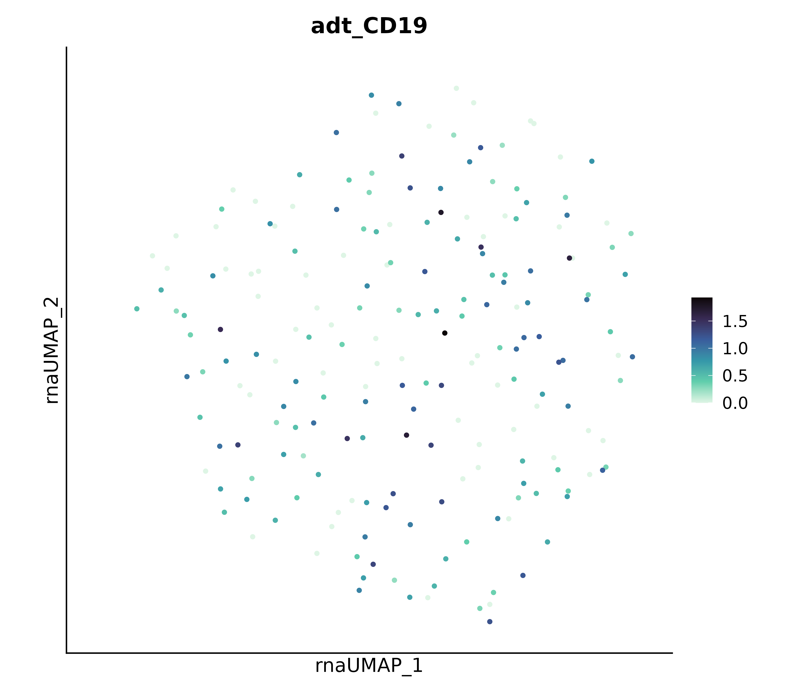
Multiple markers side by side
adt_markers <- rownames(GetAssayData(obj, assay = "ADT", layer = "data"))
FeaturePlot(obj, features = paste0("adt_", adt_markers),
reduction = "rna.umap", order = TRUE, ncol = 3, raster = FALSE) &
ggplot2::scale_color_viridis_c(option = "G", direction = -1) &
clean_dimplot2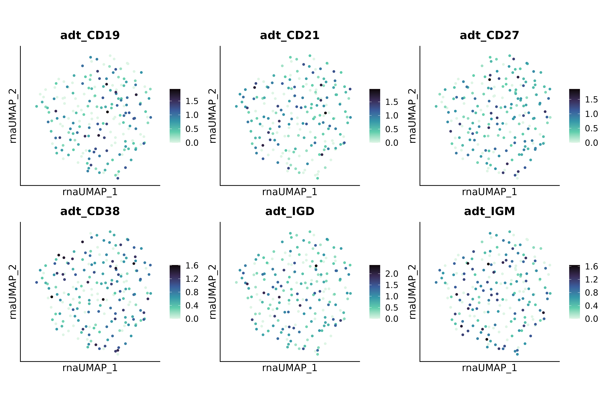
Summary of key parameters
| Argument | Purpose |
|---|---|
meta_col |
Column in @meta.data to color by (default:
seurat_clusters) |
title |
Plot title (use for the data modality name) |
data_source |
Plot subtitle (use for dataset / sample name) |
clrs_specific |
Named color vector; auto-generated if omitted |
highlight |
Highlight a subset of levels over a grey background |
order |
Draw cells with non-NA values on top |
plot_label |
Toggle cluster labels |
reduc |
Reduction to plot (default: "umap") |
details |
Optional extra subtitle line |